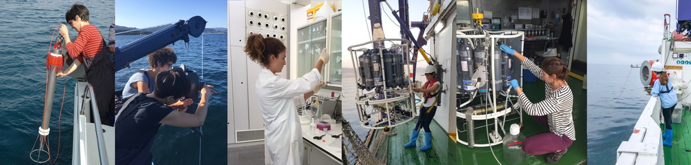

Websites
Recent and on-going projects
- Modelling and Analysis of phytoplankton Growth in the rías: understanding productIvity and harmful algae Changes (MAGIC) (PID2024-156623OB-C21, Ministerio de Ciencia, Innovación y Universidades, 2025-2028, 111K €). P.I: B. Mouriño.
- RolE of Mixing on phytoplankton bloom initiation, maintEnance and DIssipatiOn in the galician ríaS (REMEDIOS) (CTM2016-75451-C2-1-R, Ministerio de Economía y Competitividad, 2017-2020, 133K €). P.I: B. Mouriño.
Peer-review articles
- 65. Reboreda R., Souto C.; GilCoto M.; Fernández-Castro B.; Nogueira E.; Piedracoba S.; Broullon E. Mouriño-Carballido B., Study of Thin Layers of Phytoplankton in Upwelling Bays Using a High Resolution 3D Ocean Model, Under review in Journal of Marine Systems.
- 64. Velasco-Senovilla, E., Reguera B., Ramilo I., Casas G., Mouriño-Carballido B., Nogueira E., Upwelling events, depth varying succession of phytoplankton assemblages and vertical connectivity: a conceptual model, Under review in Progress in Oceanography.
- 63. Velasco-Senovilla, E., Reguera B., Sourisseau M., Mouriño-Carballido B., Nogueira E., Dynamics of microplankton assembly and niche allocation of co-occurring HAB species in response to vertical gradients during upwelling events, Under review in Harmful Algae.
- 62. Broullón E., Fernández-Castro B., Souto, C., Marigómez, B., Mouriño-Carballido B., Contrasting mixing conditions in adjacent upwelling bays shape the occurrence of thin layers of phytoplankton, Under review in Journal Geophysical Oceans.
- 61. Fontela M., Fernández-Román D., Broullón E., Farnelid H., Fernández-Carrera A., Marañón E., Martínez-García S., Rodríguez-Ramos T., Varela M.M., Mouriño-Carballido B., Puzzling out the ecological niche construction for nitrogen fixers in a coastal upwelling system, ISME Communications, Volume 5, Issue 1, January 2025, ycaf018, 10.1093/ismeco/ycaf018.
- 60. Teira, E., Mouriño-Carballido B., Fernández, E., Marañón E. Nutrients and the food web (2025). imili.org/our_water.
- 59. Tojeira, I., Souto, M., Kaufmann, M. et al. From physics to fish: 50 Years of research at Great Meteor Seamount, NE Atlantic. Mar. Biodivers. 55, 10 (2025). 10.1007/s12526-024-01484-y.
- 58. Zhibo Shao et al. Global oceanic diazotroph database version 2 and elevated estimate of global oceanic N2 fixation. Earth System Science Data 15(8):3673-3709, 10.5194/essd-15-3673-2023.
- 57. Broullón E., Franks P.J.S, Fernández-Castro B, Gilcoto M., Fuentes-Lema A., Pérez-Lorenzo M., Fernández E., Mouriño-Carballido B. Rapid phytoplankton response to wind forcing influences productivity in upwelling bays (2023). Limnology and Oceanography Letters, 10.1002/lol2.10309. Supporting information. Video Outreach.
- 56. Fernández-Castro B., Peña M., Nogueira E., Gilcoto M., Broullón E., Comsesaña A., Bouffard D., Naveira Garabato A., Mouriño-Carballido B. Efficient biological ocean mixing in fish spawning aggregations (2022). Nature Geoscience 15, 287–292, 10.1038/s41561-022-00916-3. Outreach. Recommended by Faculty Opinions.
- 55. Villamaña M., Franks P.J.S. , Fernández-Castro B., Gilcoto M., Marañón E., Mouriño-Carballido B. A pseudo-Lagrangian Transformation to Study a Chlorophyll-a Patch in the Ría de Vigo (NW Iberian 3 Peninsula) (2021). Journal of Geophysical Research, 126, e2021JC017455, 10.1029/2021JC017455. Supporting information S1. Movie S1.
- 54. Mouriño-Carballido B., Otero Ferrer J.L., Fernández-Castro B., Marañón E., Blazquez Maseda M., Aguiar-González B., Chouciño P., Graña R., Moreira-Coello V., Villamaña M. (2021) Magnitude of nitrate turbulent diffusion in contrasting marine environments. Scientific Reports 11, 18804 (2021). 10.1038/s41598-021-97731-4.
- 53. Comesaña A., Fernández-Castro B., Chouciño P., Fernández E., Fuentes_Lema A., Gilcoto M., Pérez-Lorenzo M., Mouriño-Carballido B. (2021) Mixing and Phytoplankton Growth in an Upwelling System. Frontiers in Marine Science. 8:712342. 10.3389/fmars.2021.712342.
- 52. Landolfi A., Rabouille S. and Mouriño-Carballido B. (2021). Editorial: Marine N2 Fixation: Recent Discoveries and Future Challenges. Frontiers in Marine Science, 8:664195. 10.3389/fmars.2021.664195.
- 51. Broullón E., López-Mozosa M., Reguera B., Chouciño P., Dolores Doval M., Fernández-Castro B., Gilcoto M., Nogueira E., Souto C., Mouriño-Carballido B. (2020). Thin layers of phytoplankton and harmful algae events in a coastal upwelling system. Progress in Oceanography, 189, 10.1016/j.pocean.2020.102449. Supplementary Material.
- 50. Montes T., Guerrero-Feijóo E., Bode A., Ruiz-Villareal M., Mouriño-Carballido B., Moreira-Coello V. and Varela M. (2020). Vertical variability of bacterioplankton during the summer relaxation of the coastal upwelling off Galicia (NW Spain). Estuarine, Coastal and Shelf Science, 245, 10.1016/j.ecss.2020.106791.
- 49. Villamaña V., Cermeño P., Estrada M., Fernández-Castro B., Figueiras F.G., Latasa M., Otero-Ferrera J.L, Reguera B., Marañón E., Mouriño-Carballido B. (2019). The role of mixing in controlling resource availability and phytoplankton community composition. Progress in Oceanography, 178, 10.1016/j.pocean.2019.102181. Supplementary High Resolution Figures.
- 48. Moreira-Coello V. , Mouriño-Carballido B., Marañón E., Fernández-Carrera, Pérez-Lorenzo M., A., Bode A (2019). Quantifying the overestimation of planktonic N2 fixation due to contamination of 15N2 gas stocks. Journal of Plankton Research, 00(00):1–4.10.1093/plankt/fbz034.
- 47. Díaz P., Ruiz-Villarreal M., Rodríguez R., Garrido J.L., Mouriño-Carballido B, Riobó P., Reguera B (2019). Fine scale physical-biological interactions during a shift from relaxation to upwelling with a focus on Dinophysis acuminata and its potential ciliate prey. Progress in Oceanography, 175, 309-327.
- 46. Moreira-Coello V. , Mouriño-Carballido B., Marañón E., Bode A., Sintes E., Zehr J.P., Turk-Kubo K, Varela M.M. (2019) Temporal variability of diazotroph community in the upwelling region off NW Iberia. Scientific Reports, 9:3737, 10.1038/s41598-019-39586-4. Supplementary information.
- 45. Fernández-Castro B., Mouriño-Carballido B., Álvarez-Salgado X.A. (2019) Non-refieldian mesopelagic nutrient remineralization in the eastern North Atlantic subtropical gyre. Progress in Oceanography, 171, 136-153, 10.1016/j.pocean.2018.12.001.
- 44. Otero-Ferrer J.L., Cermeño P., Fernández-Castro B., Gasol J.M., Morán X.AG., Marañon, Moreira-Coello V., Varela M., Villamaña M., Mouriño-Carballido B.. (2018). Factors controlling the community structure of picoplankton in contrasting marine environments. Biogeosciences, 15, 6199-6220, 10.5194/bg-15-6199-2018.
- 43. Fernández-Castro B., Gilcoto M., Naveira-Garabato A., Villamaña M., Graña R., Mouriño-Carballido B. (2018). Modulation of the semidiurnal cycle of turbulent dissipation by wind-driven upwelling in a coastal embayment. Journal of Geophysical Research, 123. 10.1002/2017JC013582.
- 42. Marañón E., Pérez-Lorenzo M., Cermeño E., Mouriño-Carballido B. (2018). Nutrient limitation suppresses the temperature dependence of phytoplankton metabolic rates. The ISME Journal, 10.1038/s41396-018-0105-1. Supplementary information. Dataset 1
- 41. Moreira-Coello V. , Mouriño-Carballido B., Marañón E., Fernández-Carrera A., Bode A., Varela M.M. (2017). Biological N2 fixation in the upwelling region off NW Iberia: magnitude, relevance and players. Frontiers in Marine Science, 4:303. 10.3389/fmars.2017.00303.
- 40. Villamaña M., Mouriño-Carballido B., Marañón E., Cermeño P., Chouciño P., da Silva J., Díaz, P.A., Fernández-Castro B., Gilcoto M., Graña R., Latasa M., Magalhaes J., Otero-Ferrer J.L., Reguera B., Scharek R. (2017). Role of internal waves on mixing, nutrient supply and phytoplankton community structure during spring and neap tides in the Ría de Vigo (NW Iberian Peninsula). Limnology and Oceanography, 00: 1-17, 10.1002/lno.10482. Supplementary Figure 1. Supplementary Figure 2.
- 39. Sangrá P., Stegner A., Hernández-Arencibia M., Marrero-Díaz A., Salinas C., Aguiar-González B., Henríquez-Pastene C., Mouriño-Carballido B (2017). The Bransfield Gravity Current. Deep-Sea Research I, 119, 1-15.
- 38. Cermeño, P. et al. (2016). Marine primary productivity is driven by a selection effect. Frontiers in Marine Science, 3:173. 10.3389/fmars.2016.00173.
- 37. Mompeán C., A. Bode A., M. Latasa M., B. Fernández-Castro, Mouriño-Carballido B., X. Irigoien (2016). Nitrogen inputs influence on biomass and trophic structure of ocean plankton: a study using biomass and stable isotope size-spectra. Journal of Plankton Research, 00(00): 1–15. 10.1093/plankt/fbw052.
- 36. Fernández-Castro B., M. Pahlow, B. Mouriño-Carballido, E. Marañón, A. Oschlies (2016). Optimality-based Trichodesmium Diazotrophy in the North Atlantic Subtropical Gyre. Journal of Plankton Research, 10.1093/plankt/fbw047.
- 35. Fernández-Castro B., J. Arístegui, L. Anderson, M.F. Montero, S. Hernández-León, E. Marañón, B. Mouriño-Carballido (2016). Mesopelagic respiration at the ESTOC (European Station for Time-Series in the Ocean, 15.5ºW, 29.1ºN) site inferred from a tracer conservation model. Deep-Sea Research I, 115, 63-73.
- 34. Mouriño-Carballido, B., Hojas, E., Cermeño, P., Chouciño, P., Fernández-Castro, B., Latasa, M., Marañón, E., Morán, X.A Vidal, M. (2016). Nutrient supply controls picoplankton community structure during three contrasting seasons in the northwestern Mediterranean Sea. Marine Ecology Progress Series, 10.3354/meps11558.
- 33. Fernández-Castro B., B. Mouriño-Carballido, E. Marañón, P. Chouciño, J. Gago, T. Ramírez, M. Vidal, A. Bode, D. Blasco, S.-J. Royer, M. Estrada, and R. Simó (2015). Importance of salt fingering for new nitrogen supply in the oligotrophic oceans. Nature Communications, 10.1038/ncomms9002. Supplementary material.
- 32. Estrada M., Latasa M., Emelianov M., Gutiérrez-Rodríguez A., Fernández-Castro B., Isern-Fontanet J., Mouriño-Carballido B., Salat J., Vidal M. (2014). Seasonal and short-term variability of primary production in the deep convection region of the NW Mediterranean. Deep-Sea Research I, 94, 45-61.
- 31. Fernández-Castro B., Mourinño-Carballido B., Benítez-Barrios V.M., Chouciño P., Fraile-Nuez E., Granña R., Piedeleu M., Rodríguez-Santana A. (2014). Microstructure turbulence and diffusivity parameterization in the tropical and subtropical Atlantic, Pacific and Indian Oceans during the Malaspina 2010 expedition. Deep-Sea Research I, 94, 15-30.
- 30. Marañón E., Cermeño P., Huete-Ortega M., López-Sandoval D., Mouriño-Carballido B., Rodríguez-Ramos T. (2014). Resource supply overrides temperature as a controlling factor of marine phytoplankton growth. PLOS one, 9 (6), e99312.
- 29. Sangrà, P. et al. (2014). Coupling between upper ocean layer variability and size-fractionated phytoplankton in a non-nutrient-limited environment. Marine Ecology Progress Series, 499: 35–46.
- 28. Teira E., Mouriño-Carballido B., Martínez-García S., Sobrino C., Ameneiro J., Hernández-León S., Vázquez E (2012). Controls of primary production and bacterial carbon metabolism around South Shetland Islands. Deep-Sea Research I 69, 70-81.
- 27. Luo Y.-W. et al (2012) Database of diazotrophs in global ocean: abundances, biomass and nitrogen fixation rates. Earth System Science Data, 4, 47–73.
- 26. Fernández A., Graña R., Mouriño-Carballido B., Bode A., Varela M., Domínguez F., Escánez J., de Armas D., Marañón E (2012). Community N2 fixation and Trichodesmium spp. abundance along longitudinal gradients in the Eastern Subtropical North Atlantic. ICES Journal of Marine Science, 10.1093/icesjms/fss142.
- 25. Fernández-Castro B., Anderson L., Marañón E., Ausín B., Neuer S., González-Dávila M. Santana-Casiano M., Cianca A., Santana R., Llinás O., Rueda M.J., and Mouriño-Carballido B (2012). Regional differences in modelled net production and shallow remineralization in the North Atlantic subtropical Gyre. Biogeosciences, 9, 2831–2846.
- 24. Ameneiro J., Mouriño-Carballido B., Parapar J., Vázquez E (2012). Abundance and distribution of invertebrate larvae in the Bellingshausen Sea (West Antarctica). Polar Biology, 10.1007/s00300-012-1177-4.
- 23. Mouriño-Carballido, B., Pahlow, M., Oschlies A. (2012) High sensitivity of ultra-oligotrophic marine ecosystems to atmospheric nitrogen deposition. Geophysical Research Letters, 39, L05601, 10.1029/2011GL050606.
- 22. Huete-Ortega, M., Calvo-Díaz A., Graña R., Mouriño-Carballido, B., Marañón E. (2011) Effect of environmental forcing on the biomass, production and growth rate of size-fractionated phytoplankton in the central Atlantic Ocean. Journal of Marine Systems, 88, 203–213.
- 21. Mouriño-Carballido, B., Graña, R., Fernández, A., Bode, A., Varela, M., Domínguez, J. F., Escánez, J., de Armas, D., Marañón, E. (2011) Importance of N2 fixation versus nitrate eddy diffusion along a latitudinal transect in the Atlantic Ocean. Limnology and Oceanography, 56(3), 2011, 999–1007.
- 20. Moreno-Ostos, E., Fernández, A., Huete-Ortega, M., Mouriño-Carballido, B., Calvo-Díaz, A., Morán, X. A. G., Marañón, E. (2011) Size-fractionated phytoplankton biomass and production in the tropical Atlantic. Scientia Marina, 75, 379-389.
- 19. Marañón, E., Fernández, A., Mouriño-Carballido, B., Martínez-García, S., Teira, E., Cermeño, P., Chouciño, P., Huete-Ortega, M., Fernández, E., Calvo-Díaz, A., Morán, X. A. G., Bode, A., Moreno-Ostos, E., Varela, M. M., Patey, M. D., Achterberg, E. P. (2010). Degree of oligotrophy controls the response of microbial plankton to Saharan dust. Limnology and Oceanography, 55, 2339-2352.
- 18. Fernández, A., Mouriño-Carballido, B., Bode, A., Varela, M., Marañón, E. (2010) Latitudinal distribution of Trichodesmium spp. and N2 fixation in the Atlantic Ocean. Biogeosciences, 7, 3167–3176.
- 17. Mouriño-Carballido B. & Anderson L. (2009). Net community production of oxygen derived from in vitro in situ 1-D modeling techniques in a cyclonic mesoscale eddy in the Sargasso Sea. Biogeosciences 6, 1799-1810.
- 16. Mouriño-Carballido B. (2009) Eddy-driven pulses of respiration in the Sargasso Sea. Deep Sea Research Part I: Oceanographic Research Papers 56, 1242-1250.
- 15. Mouriño B. & Neuer S. (2008). Regional differences in the role of eddy pumping in the North Atlantic subtropical gyre: Historical conundrums revisited. Oceanography 21, 52-61.
- 14. Marañón E., Pérez V., Fernández E., Anadón R., Bode A., González N., Huskin I., Isla A., Morán A, Mouriño-Carballido B., Quevedo M., Robinson C., Serret P., Teira E., Varela M., Malcolm M., Woodward S. & Zubkov, M. (2007). Planktonic carbon budget in the euphotic layer of the Eastern Subtropical North Atlantic. Aquatic Microbial Ecology 48, 261-275.
- 13. Cianca A., Helmke P., Mouriño-Carballllido B., Rueda M.J., Llinás O. & Neuer S. (2007). Decadal analysis of hydrography and in situ nutrient budgets in the western and eastern North Atlantic subtropical gyre. Journal of Geophysical Research 112 (C7), C07025, 10.1029/2006JC003788.
- 12. Mouriño-Carballido B. & McGillicuddy D., 2006. Mesoscale variability in the metabolic balance of the Sargasso Sea. Limnology & Oceanography, 51, 2675-2689. Erratum.
- 11. Teira E., Mouriño B., Marañón E., Pérez V., Pazó M.J., Serret P., Fernández P, 2005. Variability of chlorophyll and primary production in the Eastern North Atlantic subtropical gyre: potential factors affecting phytoplankton activity. Deep-Sea Research I, 52: 569-588.
- 10. Mouriño, B., E. Fernández, R. Pingree, B. Sinha, J. Escánez, D. de Armas, 2005. Constraining the effect of mesoscale features on the carbon budget of the photic layer in the NE subtropical Atlantic. Marine Ecology Progress Series, 287: 45-52.
- 9. Fernández E., Álvarez F., Anadón R., Barquero S., Bode A., García A., García-Soto C., Gil J., González N., Iriarte A., Mouriño B., Rodríguez F., Sánchez R., Teira E., Torres S., Valdés L., Varela M., Zapata M., 2004. An overview of the physical, chemical and ecological properties of a Slope Water anticyclonic Oceanic eddy (SWODDY) in the Sourthern Bay of Biscay. Journal of Marine Biological Association, UK, 84, 501-517.
- 8. Mouriño, B., E. Fernández, Alves, M., 2004. Thermohaline structure, ageostrophic vertical velocity fields and phytoplankton distribution and production in the North East Atlantic subtropical front. Journal of Geophysical Research, 109, C04020, 10.1029/2003JC001990.
- 7. Mouriño, B., E. Fernández, H. Etienne, F. Hernández, S. Giraud, 2003. Significance of cyclonic STORM (SubTropical Oceanic Rings of Magnitude) eddies for the carbon budget of the euphotic layer in the subtropical NE Atlantic. Journal of Geophysical Research, 108(C12), 3383.
- 6. Marañón, E., Behrenfeld, M., González, N., Mouriño, B., Zubkov, M.V. 2003. High variability of primary production in the Atlantic subtropical gyres. Marine Ecology Progress Series, 257: 1-11.
- 5. Mouriño, B., E. Fernández, J. Escánez, D. de Armas, S. Giraud, B. Sinha, R. Pingree. 2002. A SubTropical Oceanic Ring of Magnitude (STORM) in the Eastern North Atlantic: physical, chemical and biological properties. Deep-Sea Research II. 49 (19): 4003-4021.
- 4. Mouriño, B., E. Fernández, P. Serret, B. Sinha, D. Harbour, R.D. Pingree. 2001. Variability and sesonality of physical and biological fields at the Great Meteor Seamount (Subtropical NE Atlantic). Oceanologica Acta. 24(2). 167-185.
- 3. Marañón, E., Holligan, P.M., Barciela, R., González, N., Mouriño, B., Pazó, M.J., Varela, M., 2001. Patterns of phytoplankton size structure and productivity in contrasting open-ocean enviroments. Marine Ecology Progress Series. 216: 43-56.
- 2. González, N., R. Anadón, B. Mouriño, E. Fernández, B. Sinha, J. Escánez, D. de Armas. 2001. The metabolic balance of the planktonic community in the N. Atlantic Subtropical Gyre: The role of mesoscale instabilities. Limnology and Oceanography. 46(4): 946-952.
- 1. Marañón, E., Holligan, P.M., Varela, M., Mouriño, B., Bale, A.J., 2000. Basin-scale variability of phytoplankton biomass, production and growth in the Atlantic Ocean. Deep-Sea Research I. 47: 825-857.
Under review
2025
2023
2022
2021
2020
2019
2018
2017
2016
2015
2014
2012
2011
2010
2009
2008
2007
2006
2005
2004
2003
2002
2001
2000
Recent oral presentations
- Mouriño-Carballido B. (2025). Tiny but mighty: The challenge of powering life in the ocean as microscopic algae. III SIBECOL & XVII AEET Meeting, Pontevedra (Spain), Keynote speaker.
- Mouriño-Carballido B., Broullón E., Comesaña A., Fernández-Castro B., Bouffard D., Chouciño P., Fernández E., Franks P.J.S., Fuentes-Lema A., Gilcoto M., López-Mozos M., Marigómez B., Naveira Garabato, Nogueira E., Peña M., Pérez-Lorenzo M., Reguera B., A.Souto C. (2024). RolE of Mixing on phytoplankton bloom initiation, maintEnance and DIssipatiOn in the galician ríaS (REMEDIOS). VIII Encuentro de Oceanografía Física 2024, Valencia (Spain).
- Fernández-Román D. ,M. Fontela, E Broullón, M.M. Varela, H. Farnelid, A.Fernández-Carrera, B.Fernández-Castro, S. Martínez, T Rodríguez-Ramos, B. Mouriño-Carballido (2024). Rapid response of diazotrophs to hydrography changes in an upwelling bay. IX International Simposium of Marine Sciences, Valencia (Spain).
- Broullón E., Fernández-Castro B., Souto C., Mouriño-Carballido B. (2023). Contrasting mixing conditions in adjacent upwelling bays influence the occurrence of harmful algae blooms. Physics of the Ocean Workshop, Bad Honnef (Germany).
- B. Mouriño-Carballido, M. Villamaña, J.L. Otero , P. Cermeño, P. Chouciño, M. Estrada, B. Fernández-Castro, F.G. Figueiras, J.M. Gasol, M. Latasa, E. Marañón, X.A.G. Morán, V. Moreira-Coello, B. Reguera, M. Varela (2019). Why should plankton ecologists care about microturbulence? 1st Meeting of the Iberian Ecological Society, Barcelona (Spain).
Last updated September 2025